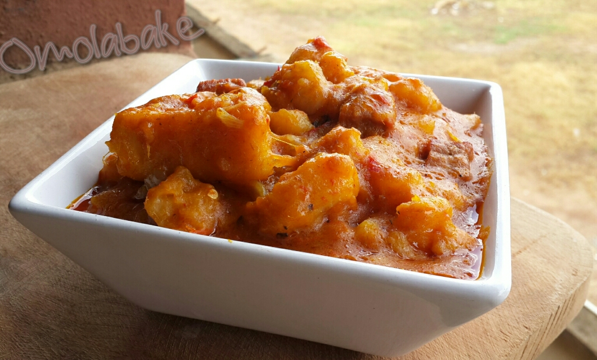

Yam Pottage

Description
If you like chunky and filling, soft, bright, and flavorful foods, look no further.
Those who don't understand Yam Pottage call it stewed yam, in essence. However, those who have seen beyond the rainbow know that it is a meal worth more than the sum of its parts.
Ingredients
- Yam
- (Sweet Potato as a decent substitute)
- Flavors, Seasoning, and Spices
- Salt,
- Onions,
- Broth or stock,
- Peppers,
- Protein (Meat and/or fish) to complete the puzzle
Steps
- Cut the yam
- Boil the yam
- Mix your favorite flavors, seasoning, and spices
- Cook on medium heat until maximum fusion occurs
- Enjoy!
Home